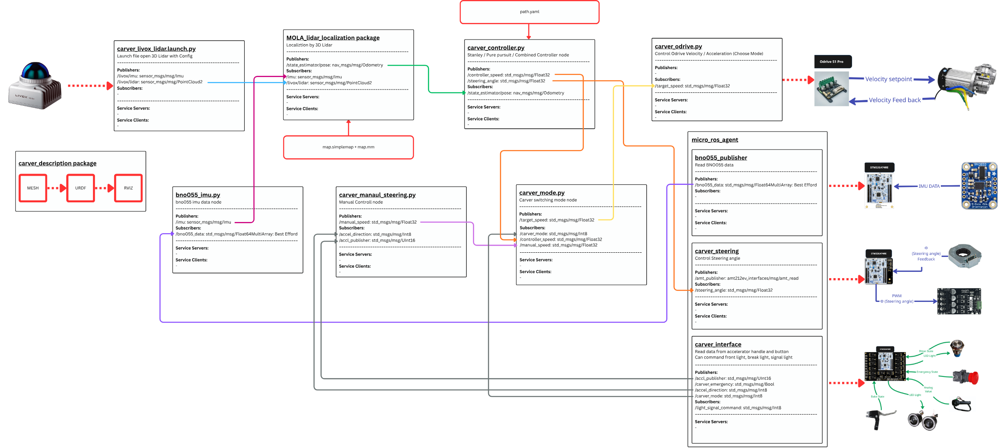

About the project
Autonomous navigation for CARVER, an Ackermann-steered mobile robot, built for the Advanced Robotic Control and Simulation with ROS 2 course.
A car-like robot cannot turn in place, so path following depends on steering geometry, and localization has to hold up along curved paths.
Localization runs on a Livox 3D LiDAR with the MOLA package, and micro-ROS firmware on STM32 boards handles steering, sensing, and the driver interface. Three path followers, Pure Pursuit, Stanley, and a combination of the two, are compared on the robot to see which keeps CARVER on its path most accurately and smoothly.
Process
Localize with 3D LiDAR
A Livox 3D LiDAR and its IMU feed the MOLA LiDAR localization package, which tracks the robot against a prebuilt map and publishes its pose.
Follow the path
The controller node reads the path and the pose, then runs Pure Pursuit, Stanley, or a combination of the two to output a target speed and steering angle.
Switch between manual and autonomous
A mode node chooses between the controller output and manual commands from the accelerator handle, so a driver can switch to manual control.
Drive the hardware with micro-ROS
STM32 boards running micro-ROS read the BNO055 IMU, close the steering loop with an absolute encoder and PWM motor driver, and handle the driver interface with its emergency switch and lights. An ODrive S1 Pro runs the drive motor from the velocity setpoint.
Compare the controllers
Each path follower is measured and compared for how accurately and smoothly it keeps CARVER on its path.
Figures

System
| Robot | CARVER, Ackermann steering |
|---|---|
| Sensors | Livox 3D LiDAR, BNO055 IMU, absolute steering encoder |
| Localization | MOLA LiDAR localization on a prebuilt map |
| Controllers | Pure Pursuit, Stanley, combined Pure Pursuit and Stanley |
| Drive | ODrive S1 Pro for the drive motor, PWM motor driver for steering |
| Embedded | STM32 boards with micro-ROS |
| Software | ROS 2, micro-ROS, RViz |
| Course | Advanced Robotic Control and Simulation with ROS 2 |